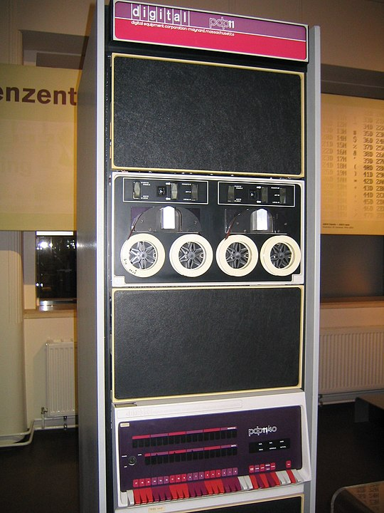

Maurizio Tomasi
Martedì 24 Settembre 2024
All’inizio di ogni sessione di laboratorio mosterò alcune slides che riprendono alcuni concetti già visti a lezione.
Queste slides sono disponibili all’indirizzo ziotom78.github.io/tnds-tomasi-notebooks, e sono navigabili.
Se vi è più comodo, potete ottenere una versione PDF producendola
da soli: basta aggiungere ?print-pdf alla fine della URL e
stampare la pagina da browser in un file PDF (vedi le istruzioni
dettagliate).
Non fare copia-e-incolla da slide come queste! Trascrivere a mano il codice è più utile, perché vi consente di notare alcune sottigliezze sintattiche (es., dove vengono usati i punti e virgola). In generale, trascrivere codice è un ottimo allenamento per imparare a scrivere programmi.
Create un segnalibro per il sito https://cppreference.com/, è indispensabile quando si programma in C++:
Contiene la documentazione completa del linguaggio, suddivisa nelle varie versioni (C++11, C++14, C++17, C++20, C++23…)
Contiene la documentazione e gli esempi d’uso per tutte le funzioni della libreria standard del C++
Cosa molto importante da fare, una volta per tutte
Aprite la finestra del terminale ed eseguite il comando
/home/comune/labTNDS_programmi/enable-latest-gccChiudete la finestra del terminale, riapritela ed eseguite
g++ --version. Dovreste vedere questo:
g++ (GCC) 13.2.1 20231205 (Red Hat 13.2.1-6)
Copyright (C) 2023 Free Software Foundation, Inc.
This is free software; see the source for copying conditions. There is NO
warranty; not even for MERCHANTABILITY or FITNESS FOR A PARTICULAR PURPOSE.La spiegazione dettagliata degli esercizi si trova qui: carminati-esercizi-01.html.
Gli esercizi sono i seguenti:
Makefile (variante del
precedente)Dovrete leggere i dati dal file 1941.txt (fate click col tasto destro e
salvate il link nella vostra cartella di lavoro).
$ head -n 4 1941.txt
0.536144578313253
-1.7373493975903613
0.9650602409638556
1.2216867469879515
$ ./esercizio01.1 4 1941.txt
Media = 0.246386
Varianza = 1.37172
Mediana = 0.750602
-1.73735
0.536145
0.96506
1.22169Nota: la varianza è il quadrato della deviazione standard; quest’ultima si indica anche con RMS (Root Mean Square).
È molto importante che verifichiate la corretta esecuzione dei vostri programmi!
State attenti al calcolo della mediana: il 30% degli studenti alla fine del corso consegna esercizi di questa prima lezione in cui la mediana è errata.
Le soluzioni che dovete aspettarvi sono ricavate nella slide seguente. Assicuratevi di ottenere gli stessi valori! (A meno che non usiate il fattore N - 1 anziché N nel calcolo della varianza).
N = 365:
- Mean : -1.0813335533916488
- Variance : 6.67466568793561 (corrected: 6.693002681583785)
- Standard deviation : 2.5835374369138933 (corrected: 2.587083818043742)
- Median : -0.9156626506024095
N = 10:
- Mean : -1.1889156626506023
- Variance : 4.270508578893889 (corrected: 4.745009532104321)
- Standard deviation : 2.0665208876016448 (corrected: 2.1783042790446703)
- Median : -1.3186746987951807
N = 9:
- Mean : -0.9204819277108434
- Variance : 4.024442831567232 (corrected: 4.527498185513136)
- Standard deviation : 2.0061014011179075 (corrected: 2.12779185671746)
- Median : -0.9Potete svolgere gli esercizi in uno dei modi seguenti:
Non premete quello che sembra essere il pulsante on/off del monitor, perché in realtà spegne il computer (e manda una segnalazione al centro di calcolo).
Vi consiglio di usare come editor Visual Studio Code, che è installato sui computer del laboratorio. Attenzione però: la configurazione di default di VSCode causa problemi sui computer del laboratorio!
Di default VS Code richiede 5 GB di spazio su disco per ottimizzare i suggerimenti di completamento della sintassi (vedi discussione).
Ma gli studenti hanno a disposizione solo 1 GB di spazio nelle proprie home.
Il problema non si manifesta mai chiaramente (ad esempio col messaggio “spazio su disco esaurito”), ma di volta in volta compaiono problemi diversi:
È possibile disabilitare la cache o ridurla a un valore ragionevole modificando nelle impostazioni di VS Code la voce Intellisense cache size.
Potete scaricare ed installare Visual Studio Code anche sul vostro portatile: è gratuito e disponibile per Windows, Linux e Mac OS X. Per configurarlo in modo che sia usabile con programmi C/C++, eseguite dal terminale del vostro computer il comando
code --install-extension ms-vscode.cpptools(Attenzione, se avete installato «Code OSS» il comando non funziona: occorre proprio la versione rilasciata da Microsoft per installare questa estensione).
Se usate un sistema Linux o Mac OS X, potete usare il comando
ssh dal terminale.
Digitate ssh NOMEUTENTE@tolab.fisica.unimi.it, dove
NOMEUTENTE è il nome associato alla vostra email.
Ad esempio, la mia email è maurizio.tomasi@unimi.it
e quindi il mio nome utente è maurizio.tomasi:
$ ssh maurizio.tomasi@tolab.fisica.unimi.it
Last login: Wed Dec 27 06:42:38 2023 from 93.45.84.151
[maurizio.tomasi@lab05 ~]$Se usate Windows, installate la versione free di MobaXTerm.
Dovete configurare una connessione di tipo «SSH» a
tolab.fisica.unimi.it, specificando il vostro nome utente
(solitamente nome.cognome).
È un’ottima soluzione anche se volete sviluppare sul vostro computer Windows usando WSL: in questo caso MobaXTerm permetterà di aprire finestre grafiche in cui mostrare i vostri plot, quando introdurremo i comandi grafici.
Una soluzione che non richiede di installare nulla è Repl.it, un ambiente di sviluppo usabile da browser.
È stato già usato negli anni passati, quindi è fattibile impiegarlo per questo corso…
…ma il sito non si è sempre dimostrato affidabile: a volte resta offline, altre volte è estremamente lento.
Inoltre i proprietari hanno recentemente cambiato il contratto di licenza (Agosto 2024), rendendo il suo uso sconsigliabile: usatelo a vostro rischio e pericolo!
#defineAnziché usare #define per definire costanti,
preferite const:
Con #define ci possono essere problemi con la
precedenza degli operatori:
I parametri argc e argv passati come
argomenti al main servono per leggere parametri passati
dalla linea di comando, come nel caso seguente:
Si possono dichiarare in più modi, tutti equivalenti:
Il primo parametro (argc) contiene il numero di
parametri, incluso il nome dell’eseguibile.
Il parametro argv è una lista di puntatori a
caratteri (ossia stringhe) che contengono il nome dell’eseguibile
seguito dal resto.
Di conseguenza, argv[0] contiene il nome del
programma eseguibile, mentre tutti i parametri passati da linea di
comando sono memorizzati in argv[1], argv[2],
etc.
Se eseguiamo più volte il programma, ecco il suo output:
$ ./args-example
argc = 1
argv[0] = "./args-example"
$ ./args-example 10
argc = 2
argv[0] = "./args-example"
argv[1] = "10"
$ ./args-example 10 1941.txt
argc = 3
argv[0] = "./args-example"
argv[1] = "10"
argv[2] = "1941.txt"Prendiamo questo semplice esempio:
Sinora abbiamo mostrato esempi in cui tutto il codice sorgente è in un unico file. Questo non è però utile, perché in futuro dovrete riciclare spesso parti di codice!
Anziché usare le funzioni di copia-e-incolla, è meglio
suddividere il codice in più file con estensione .cpp, che
dovranno però poi essere compilati uno a uno e «combinati» insieme (il
termine esatto è linking).
In questo corso vi obblighiamo ad usare uno strumento piuttosto vetusto ma presente su qualsiasi sistema Unix: GNU Make.
Partiamo da un caso molto semplice (l’esercizio 1.2 sarà più
complicato). Create un file con nome Makefile (attenzione
alla maiuscola iniziale!), e scrivete queste righe al suo interno:
Infine, da linea di comando eseguite il comando make
($ indica il prompt):
$ make
g++ -std=c++23 -g3 -Wall --pedantic main.cpp -o main
$ ls
main main.cpp MakefileÈ utile specificare dei flag aggiuntivi per la compilazione, tramite la riga
-std=c++23 abilita le caratteristiche più recenti
(2023) del C++.
-g3: se il codice va in crash, stampa la
riga di codice che ha causato l’errore.
-Wall: rende il compilatore C++ più brontolone del
solito.
--pedantic: lo rende ancora più brontolone.
Il comando make serve per «creare» (appunto, to
make) dei file partendo da altri. Con la scritta
si dice a Make che si vuole creare il file main
(eseguibile) partendo dal file main.cpp.
Make sa che i file con estensione .cpp sono
programmi C++, e quindi correttamente invoca l’eseguibile
g++, passandogli i parametri nella variabile
CXXFLAGS.
Se si vuole fornire manualmente la lista dei comandi da inviare, bisogna scriverli nella riga successiva
Questa seconda riga va indentata obbligatoriamente inserendo un carattere TAB**, solitamente indicato sulle tastiere con ↹ (è a sinistra del tasto Q):
Attenzione: se usate uno o più spazi anziché il
TAB, make darà errore!
Se eseguiamo immediatamente make una seconda volta,
avviene una cosa interessante:
$ make
$In questo caso, Make non fa nulla: ha controllato le date dei
file main e main.cpp, e ha visto che il primo
è stato creato dopo il secondo: quindi non c’è bisogno di
compilare nuovamente il programma.
Se voleste obbligare make a saltare il controllo
delle date e ricreare tutto da capo, basta invocarlo così:
make -B.
Nell’esercizio 1.2 si richiede di dividere il programma tra più
file, e di compilarli separatamente. In questo caso la struttura del
Makefile si complica:
esercizio1.2: esercizio1.2.cpp funzioni.cpp
# Con \ si può andare a capo
g++ esercizio1.2.cpp funzioni.cpp \
-o esercizio1.2 $(CXXFLAGS)Questo esempio crea di nuovo l’eseguibile a partire da file
.cpp.
Quanto scritto qui sopra funziona, ma non è quanto
richiesto dall’esercizio: bisogna esplicitare anche il
passaggio intermedio, ossia la creazione di file
.o.
.o)L’esercizio 1.2 richiede di esplicitare le dipendenze «intermedie».
Questo è ciò che serve per i file .o:
esercizio1.2: esercizio1.2.o funzioni.o
g++ esercizio1.2.o funzioni.o -o esercizio1.2
esercizio1.2.o: esercizio1.2.cpp funzioni.h
g++ -c esercizio1.2.cpp -o esercizio1.2.o $(CXXFLAGS)
funzioni.o: funzioni.cpp funzioni.h
g++ -c funzioni.cpp -o funzioni.o $(CXXFLAGS)(CXXFLAGS non serve quando si mettono insieme più file
.o: la compilazione del codice C++ è già
avvenuta).
GNU Make definisce alcune variabili speciali che semplificano la
scrittura del Makefile. Una di queste è $@,
che rappresenta il nome del file da creare.
L’esempio nella slide precedente si può riscrivere così:
È più facile riciclare il Makefile nei nuovi
esercizi!
La variabile $@ è detta automatica.
Ecco le variabili più importanti, con dei trucchi per ricordarne il
significato:
| Variabile | Significato | Trucco |
|---|---|---|
$@ |
File da creare | Il simbolo @ è quello delle email, quindi è come
l’«indirizzo» di destinazione di una lettera |
$^ |
Lista dei file dipendenti | Il simbolo ^ ricorda la freccia ↑, che indica la riga
precedente in cui c’è la lista di file dipendenti |
$< |
Primo file dipendente | Il simbolo < ricorda la freccia ←, che indica la
posizione del primo elemento nella lista |
#includeI comandi che iniziano con # storicamente venivano
analizzati da un programma separato, cpp, invocato
prima del compilatore. (Oggi non è più così, ma dal punto di
vista concettuale non cambia).
Il programma cpp fa una semplice sostituzione
testuale, e non capisce praticamente nulla del
linguaggio.
Il video seguente mostra che un file include.h non
deve neppure essere sintatticamente valido: basta che, una volta
“espanso” con cpp, il programma principale sia
corretto.
Includete sempre nei vostri file tutti gli
#include che servono!
Ad esempio, se un file main.cpp contiene questi
#include:
// main.cpp
#include "vectors.h" // Define 3D vectors
#include "newton.h" // Define functions to solve Newton's problemsè buona cosa includere comunque vectors.h
anche dentro newton.h:
Programmi complessi usano moltissimi #include. In
questo caso si tende a inserirli in ordine alfabetico, per individuare
duplicati:
Formattatori automatici di codice come clang-format
riordinano gli #include: nel nostro caso quindi metterebbe
newton.h prima di vectors.h,
e la compilazione fallirebbe!
Ogni #include richiede tempo per la compilazione. Di
tanto in tanto nei progetti si fa un /purge/ degli #include
inutili: in ogni file, si controlla se ci sono degli header che
definiscono cose non usate all’interno del file.
Ad esempio, una riga #include "mp3.h" all’interno di
un file sorgente in cui non si toccano affatto file MP3!
Nel nostro caso, i vettori definiti in vector.h
potrebbero non essere mai usati esplicitamente in main.cpp,
magari perché in esso si calcola semplicemente il periodo orbitale di un
satellite artificiale. Ma se ci sono dipendenze nascoste (come
newton.h che dipende da vector.h), questo è un
problema!
Quando avrete svolto gli esercizi di questa lezione, vi sarà
chiaro che la scrittura del Makefile è un processo lungo e
verboso.
Il comando make è stato inventato
nel 1976 da Stuart Feldman, e funzionava su un computer PDP-11 (vedi
slide seguente).
Oggi più nessuno (neppure io!) usa GNU Make direttamente per compilare codice C++. Per i vostri progetti futuri (oltre questo corso) vi converrà usare sistemi più evoluti ed agili; tra questi, il più usato in assoluto è CMake.
|  |
|
CMake è lo standard de facto per compilare progetti in C/C++, e si basa su GNU Make. Il modo in cui si usa è il seguente:
CMakeLists.txtcmake da linea di comando: esso legge
CMakeLists.txt e produce un file contenente i comandi da
compilare in un sistema
scelto dall’utente.Anche se oggi esistono sistemi più veloci e performanti di Make
(come Ninja, che è usato per
compilare Google Chrome e Android), è possibile chiedere a CMake di
produrre un Makefile.